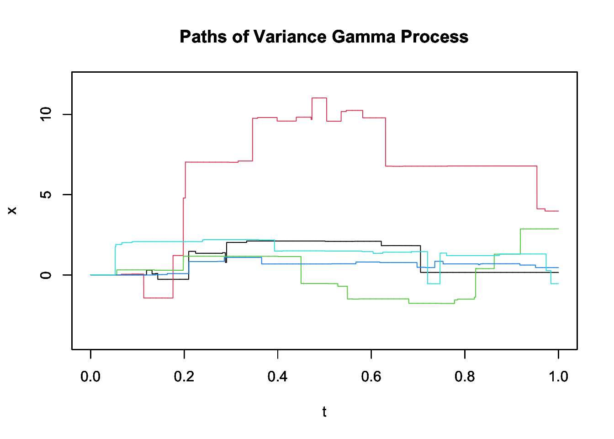

YUIMA 入門
2024-05-17
A Blog Entry on Bayesian Computation by an Applied Mathematician
$$
$$
YUIMAについては次の記事も参照：
Poisson 過程と複合 Poisson 過程については次の記事を参照：
加法過程 \(\{X_t\}\) について，\(X_t\) の分布は必ず \(\mathbb{R}^d\) 上の無限可分分布になる．2
加えて，加法過程の分布は１次元の有限次元分布族が特徴付ける．
このことにより，加法過程 \(X\) の分布は，各 \(X_t\) の無限可分分布を特徴付ける特性量 \((A_t,\nu_t,\gamma(t))\) によって特徴付けられる．
Lévy 過程は，\(A:=A_1,\nu:=\nu_1,\gamma:=\gamma(1)\) について， \[ A_t=tA,\quad\nu_t=t\nu,\quad\gamma_t=t\gamma \] と表せる場合に当たる．
\(\{(A_t,\nu_t,\gamma_t)\}_{t\in\mathbb{R}_+}\) を加法過程の特性量とする．
このとき， \[ \widetilde{\nu}([0,t]\times B):=\nu_t(B),\qquad t\ge0,B\in\mathcal{B}(\mathbb{R}^d) \] は \(\mathbb{R}_+\times\mathbb{R}^d\) 上に測度を定める．
よって，任意の加法過程について， \[ \int_{\mathbb{R}^d}(1\land\lvert x\rvert^2)\nu_t(dx)<\infty \] が必要である．
Lévy 過程であるとき，定常増分であることが必要であるため，跳躍時刻は \(\mathbb{R}_+\) 上の一様な Poisson 点過程に従う必要がある．これより， \[ \widetilde{\nu}=\ell_+\otimes\nu \] と分解できる必要があり，この特性測度 \(\nu\) が Lévy 測度である．このとき，\(\nu_t=t\nu\) かつ \(\widetilde{\nu}(dsdx)=ds\nu(dx)\)．
\[ \int_{B^d}\lvert x\rvert\,\nu_t(dx)<\infty,\quad t>0 \] を満たす場合，Poisson 補過程によらない，より簡潔な表示を持つ．
本節の目的は，Lévy 過程の次の３分類の見本道の違いを理解することである：10
純粋跳躍確率過程であっても，B 型ならば，見本道は区分的定数にはならない．Gamma 過程（第 3.6 節）がその例である．
Lévy 過程の見本道は右連続であるから，\(\mathbb{R}_+\) 上トータルの跳躍回数は殆ど確実に可算回である．
\(\nu(\mathbb{R}^d)=\infty\) の場合は，有限区間上での跳躍回数も無限になる．
さらに，次のことが言える：
\(d=1\) で，殆ど確実に単調増加な見本道を持つ Lévy 過程を 従属過程 (subordinator) という．15
仮に \(A=0,\nu((-\infty,0))=0\) だが， \[ \int_0^1x\,\nu(dx)=\infty \] であったとする．
このとき，正なジャンプとドリフトしか持たないはずであるから，場合によっては単調増加過程になっても良さそうなものである．
しかし，このような過程が発散せずに well-defined であるということは，負の方向に無限に強いドリフトを持っており，これが正なジャンプを打ち消していることが必要である．
それ故，ジャンプの隙間では負方向のドリフトが競り勝ち，全体としては単調増加にならない．特に，任意の区間において単調増加にならない．17
Gamma 過程は，拡散項もドリフト \(\gamma_0\) も持たない，純粋跳躍な従属過程である．
しかし，正のジャンプのみをもち，ジャンプだけで増加していく過程だからと言って，その見本道は区分的に定数ではない．
その Lévy 測度は \(\nu((0,\infty])=\infty\) を満たし，B 型に分類される．従って，\(\mathbb{R}_+\) の稠密部分集合上でジャンプしており，見本道は殆ど確実に，任意の点 \(t\in\mathbb{R}_+\) で非連続である．
Gamma 過程は元々，(Moran, 1959) によりダムの貯水量のモデルとして導入された．
しかし，\(\nu\) は平均を持つために有界変動ではあり，実際シミュレーションによって得る見本道を見ても，殆どのジャンプは目に見えない．
\(\mathbb{R}\) 上の Gamma 分布 \(\mathrm{Gamma}(\alpha,\nu)\) とは，密度関数 \[ g(x;\alpha,\nu):=\frac{\alpha^\nu}{\Gamma(\nu)}x^{\nu-1}e^{-\alpha x}1_{\mathbb{R}^+}(x) \] が定める分布をいう．\(\alpha\) をレート，\(\nu\) を形状パラメータというのであった．
\(\sigma\)-有限測度 \(\rho_0\in\mathcal{P}(E)\) と Lévy 測度 \(\nu:=\mathrm{Gamma}(\alpha,0)\)，すなわち \[ \nu(dr):=\frac{e^{-\alpha r}}{r}1_{\mathbb{R}^+}(r)\,dr \] について，\(\lambda:=\rho_0\otimes\nu\) で定まる強度測度を持つ \(E\times\mathbb{R}_+\) 上の Poisson 点過程 \(\xi\) を Gamma 点過程 という．19
これは \[ \xi(B)\sim\mathrm{Gamma}(\alpha,\rho_0(B)) \] を満たす複合 Poisson 点過程である．\(\rho_0\) のことを形状測度ともいう．
しかし，\(\mathrm{Gamma}(\alpha,0)\) などという分布はなく， \[ \nu(\mathbb{R})=\int^\infty_0r^{-1}e^{-\alpha r}dr=\infty. \]
このとき，任意の \(\rho_0\) で測って正の測度を持つ集合 \(\rho_0(B)>0\;(B\in\mathcal{E})\) に対して，\(\xi\) は殆ど確実に無限個の点を \(B\) 内にもつ．23
しかし，\(\rho_0(B)<\infty\) ならば \(\xi(B)<\infty\) ではある．すなわち，ジャンプ幅も含めて足し合わせると，収束する．これは，\(\nu\) が平均を持つことによる： \[ \int_0^\infty r\,\nu(dr)=\alpha^{-1}. \]
一般に，\(\xi\) を \(\mathbb{R}^+\) 上の Lévy 測度 \(\nu\in\mathcal{P}(\mathbb{R}^+)\) を持つ一様な複合 Poisson 点過程，すなわち \(\ell_+\otimes\nu\) を強度測度とする \(\mathbb{R}_+\times\mathbb{R}^+\) 上の Poisson 点過程とすると， \[ Y_t(\omega):=\xi(\omega,[0,t]) \] で定まる過程 \(Y\) は，一般に Lévy 測度 \(\nu\) を持つ 従属過程 (subordinator) という．24
Lévy 測度 \(\nu\in\mathcal{P}(\mathbb{R}^+)\) を \[ \nu(dr):=\delta\frac{e^{-\gamma r}}{r}dr \] \[ \delta,\gamma>0, \] で与えたとき，付随する従属過程 \(\{Y_t\}\) を Gamma 過程 といい，\(\mathrm{Gamma}(\delta,\gamma)\) で表す．25
これは \(Y_t\sim\mathrm{Gamma}(\gamma,\delta t)\) を満たす Lévy 過程である．

目視できないジャンプが無数に存在することが窺える．
２つの独立な Gamma 過程 \[ X^+\sim\mathrm{Gamma}(\delta,\gamma^-),X^-\sim\mathrm{Gamma}(\delta,\gamma^+) \] に対して， \[ X^0_t=X^+_t-X^-_t \] と表せる Lévy 過程 \(X^0\) を 分散 Gamma 過程 という．26

分散 Gamma 過程は，オプション価格の対数のモデルとして，Brown 運動より柔軟なモデルとしても用いられる (Madan et al., 1998)．
これは，Brown 運動の分散が Gamma 分布に従うとして得る過程であるとも見れる．実際，Brown 運動の時間を，Gamma 過程によって変換したものが分散 Gamma 過程である．
実際，Brown 運動 \(B\) とこれと独立な Gamma 過程 \(T\) について， \[ X^0_t=B_{T_t} \] と表せる．27
すなわち，安定分布とは， \[ Z_n:=\frac{\sum_{i=1}^nY_i-b_n}{a_n} \] という形の，独立同分布確率変数の正規化された和の列 \(\{Z_n\}\) の分布収束極限として現れ得る分布の全体を指すことになる．29
また，\(a_n\) は \(a_n=n^{1/\alpha}\) という形に限り，この \(\alpha\in(0,2]\) を 安定指数 という．
安定指数 \(\alpha\in(0,2)\) を持つ安定分布の Lévy 測度は非有限であり，平均も持たない．
安定分布は無限可分であるため，Lévy-Khintchin 分解を通じた特性関数の形が特徴付けられる．
中でも，（回転）対称な安定分布は特に簡単な表示を持つ：
安定指数 \(\alpha\) を持つ回転対称な安定分布 \(Y\) は自己相似性を持つ．
一般に，Hurst 指数 \(H>0\) に関して自己相似的 (self-similar) であるとは，任意の \(a>0\) について \[ (Y_{at})\overset{\text{d}}{=}(a^HY_t) \] を満たすことをいう．
安定指数 \(\alpha\) を持つ回転対称な安定分布 \(Y\) については，\(H=\alpha^{-1}\) と取れる．
Brown 運動は \(H=1/2\) について自己相似である．
また，自己相似な Lévy 過程は，狭義の安定過程に限る．33
\(\alpha\in(0,1)\) の安定指数を持つ安定過程は，従属過程になる．34
Cauchy 過程は安定指数 \(\alpha=1\) を持つ狭義の対称安定過程である．39
拡散項を持たないが，Lévy 測度は平均を持たず（命題 4.1.2），C 型の Lévy 過程である．
すなわち，殆ど確実に，任意の区間上で有界変動でない．

Lévy 測度 \[ \int_{\mathbb{R}^d}(\lvert u\rvert^2\land1)\,\nu(du)<\infty \] に関して最も興味深いのは，跳躍測度の焦点になるのは，裾の重さではなくて極小の跳躍の量であるということである．
裾とは別に，極小の跳躍の和が発散するかどうかが B 型と C 型を分ける．
(Nualart and Nualart, 2018, p. 158) 定義9.1.1，(Sato, 2013, p. 3) 定義1.6，(Rocha-Arteaga and Sato, 2019, pp. 12–13) 定義1.31に倣った．(Protter, 2005, p. 20) では(2)の\(D\)-過程という部分がないのみで，定理30 (Protter, 2005, p. 21) で常に\(D\)-修正が取れることを示している．(Le Gall, 2016, p. 175) 6.5.2節も同様の取り扱いである．(伊藤清, 1991, p. 306) は時間的一様性を所与のものとはせず，(1), (2), (3), (5)のみをLévy過程の定義としており，さらに(4)も満たすものを 一様Lévy過程 という．(Baudoin, 2014, pp. 89–90) 定義3.40では(5)がない．(Böttcher et al., 2013, p. 14) 例1.17では(1),(2)がない．(Osswald, 2012, pp. 258–259) は(1), (3), (4)を定義としている．(Applebaum, 2009, p. 43) は(1), (3), (4), (5)を定義としている．(佐藤健一, 1990) では全く同じものを加法過程と呼ぶが，(佐藤健一, 2011) は完全に一致する語用法をする（加法過程に確率連続性を課している点を除く）．↩︎
(Sato, 2013, p. 47) 定理9.1 参照．↩︎
(Sato, 2013, p. 51) 定理9.7参照．↩︎
(Dudley, 2002, p. 327) 定理9.8.3，(Sato, 2013, p. 37) 定理8.1，(Rocha-Arteaga and Sato, 2019, p. 11) 定理1.28，(Baudoin, 2014, p. 91) 定理3.46，(Applebaum, 2009, p. 29) 定理1.2.14 など参照．↩︎
Gauss 共分散の用語は (Sato, 2013, p. 38) 定義8.2．Khintchine 測度は (Loéve, 1977, p. 343)，(Applebaum, 2009, p. 31)，(Böttcher et al., 2013, p. 33)，(Baudoin, 2014, p. 92) など．↩︎
(Sato, 2013, p. 39) 注8.4．↩︎
特性測度の名前は (Revuz and Yor, 1999, p. 478) 演習 XII.1.18 など．命題は (Sato, 2013, p. 53) 注9.9も参照．↩︎
(Sato, 2013, p. 120) 定理19.2より．(Protter, 2005, p. 31) 定理42 は Lévy 過程に限って示している．(1)は (伊藤清, 1991, p. 313) 補題5.3でも解説されている．(Protter, 2005, p. 26)定理35も参照．↩︎
この分類は (Sato, 2013, p. 65) 定義11.9に倣った．↩︎
(Sato, 2013, p. 140) 定理21.9 参照．↩︎
(Sato, 2013, p. 135) 定理21.1．↩︎
(Lowther, 2011) 定理１，(Sato, 2013, p. 135) 定理21.2．↩︎
(Sato, 2013, p. 136) 定理21.3．↩︎
(Applebaum, 2009, p. 52)，(Baudoin, 2014, p. 95) 定義3.50，(Sato, 2013, p. 137) 定義21.4，(Iacus and Yoshida, 2018, p. 171) に倣った．(Kingman, 1992, p. 88) 8.4節，(Last and Penrose, 2017, p. 156) 例15.7 は命題の条件2の方を定義に用いている．↩︎
(Sato, 2013, p. 137) 定理21.5．↩︎
(Sato, 2013, p. 138) も参照．↩︎
(Lowther, 2011) 定理２，(Sato, 2013, p. 140) 定理21.9．↩︎
定義は (Last and Penrose, 2017, p. 155) 例15.6 に倣った．↩︎
(Ghosal and van der Vaart, 2017, p. 562) 命題G.2.(i)，(Last and Penrose, 2017, p. 163) 演習15.1，(Kingman, 1992, pp. 92–) 9.2節．↩︎
\(n=2\) を取ると１単体（線分），\(n=3\) と取ると２単体（三角形）を得る．↩︎
(Kingman, 1992, p. 93)，(Ghosal and van der Vaart, 2017, p. 59) 定義4.1．↩︎
\(\lambda(B)=\rho_0(B)\nu(\mathbb{R})=\infty\) となるためである．(Last and Penrose, 2017, p. 163) 演習15.2も参照．↩︎
(Kingman, 1992, p. 88) 8.4節，(Last and Penrose, 2017, p. 156) 例15.7 などの用語法．一般に subordinator とは，単調増加な Lévy 過程をいう (Sato, 2013, p. 137) 定義21.4，(Baudoin, 2014, p. 95) 定義3.50，(Iacus and Yoshida, 2018, p. 171)．これは，時間変数に関する変数変換を subordination と呼び，その際の変数変換に使えるためである．↩︎
記法は (Iacus and Yoshida, 2018) による．(Applebaum, 2009, pp. 54–55) 例1.3.22，(Protter, 2005, p. 33) 例４も参照．↩︎
(Lowther, 2011)，(Applebaum, 2009, p. 59) 例1.3.31 も参照．↩︎
(Revuz and Yor, 1999, p. 116) 定義III.4.1，(Sato, 2013, p. 69) 定義13.1，(Shiryaev, 2016, p. 416) 定義3.6.2，(Loéve, 1977, p. 338)．↩︎
(Shiryaev, 2016, p. 416) 定理3.6.3 も参照．↩︎
(Sato, 2013, p. 80) 命題14.5．↩︎
(Sato, 2013, p. 86) 定理14.14．(Shiryaev, 2016, p. 419) 定理3.6.4，(Loéve, 1977, p. 339)，(Dudley, 2002, p. 328) 定理9.8.4 は \(d=1\) の場合．↩︎
(Ibragimov and Linnik, 1971, p. 316) 定理18.1.1 も参照．↩︎
狭義の安定過程とは，\(b_n\equiv0\) と取れることをいう (Sato, 2013, p. 69) 定義13.1．(Embrechts and Maejima, 2002)，(Applebaum, 2009, p. 51) 例1.3.14 も参照．↩︎
(Revuz and Yor, 1999, p. 116)，(Sato, 2013, p. 138) 例21.7，(Applebaum, 2009, p. 53) 例1.3.18 も参照．↩︎
(Applebaum, 2009 @/53) 例1.3.19 も参照．↩︎
(Applebaum, 2009, p. 54) 例1.3.21 も参照．↩︎
(Revuz and Yor, 1999, p. 116)，(Rogers and Williams, 2000, p. 133) も参照．↩︎
(Revuz and Yor, 1999, p. 107) 命題III.3.9 も参照．↩︎
(Sato, 2013, p. 87) 例14.17．↩︎